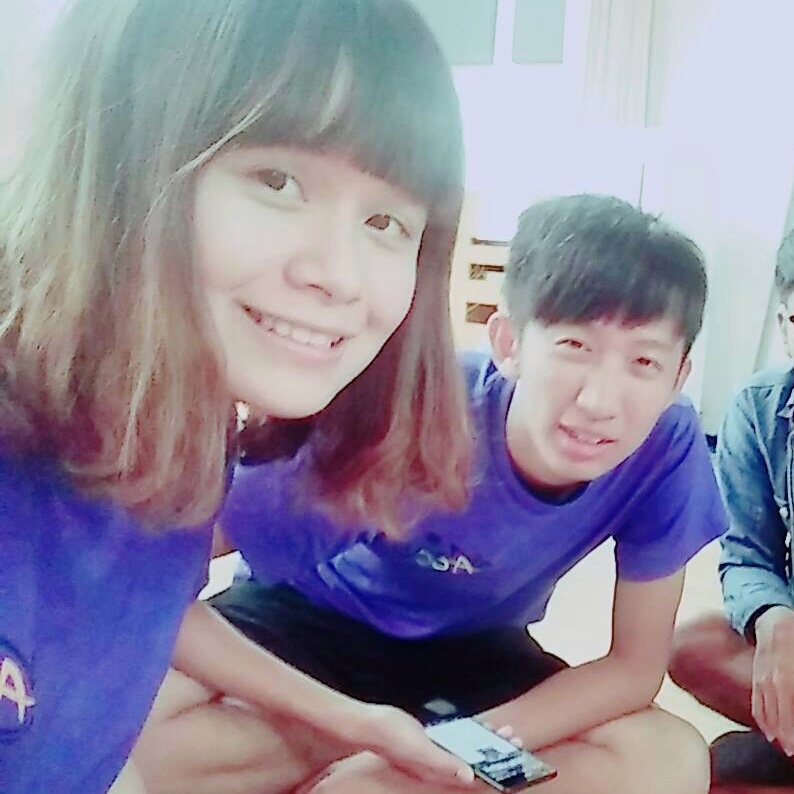

公司職員簡介
姓名 : 張純瑜
職稱 : 末代聚一老公主
入社年份 : 2015-2016
特殊表現 :反正就是一直吃一直痴(家林寫的) 約吃飯因為line帳號不見所以被吳政鴻遺忘
員工表現

家林
姊! 我知道你最好了，才不會為一點小事生氣。其實我一直注意到你臉上有點東西，有點漂亮。你是我們的高鹽質小陶器，你說一沒人敢說二。每次股聚都能看你出糗，好開心。真的很開心聚一有你們，讓我的大一生活過得很充實。
匿名
想跟你說一件很好笑的事，有次在泰崗農忙，當時我們幫忙的叔叔說：你們以後還是不要派一男一女來幫我們吧!去年就有人在幫忙的時候在水蜜桃樹下親親我我...然後故事就結束了。但我更想說的是，很開心你是劇一的股長之一，有點瞎又是帶電腦擔當，是我在原文不可抹滅的珍貴回憶之一。那那就祝你畢業快樂喔~
珊羽
大一進原文遇到的第一個股長之一，雖然看起來很可愛，但還記得之前想劇時偶爾怪點子還是你想的呢，總之，很感謝你們用心得帶劇一，讓原文一開始就給了我們好印象，畢業快樂啦。
筠宣
劇一公主（三百個愛心）還記得我剛進原文，甚麼都不知道XD所以只好投靠唯一認識的學姊，真的受到妳滿滿的照顧嗚嗚。 謝謝你不論是宿營、劇一還有好多好多事都幫了我很多，那時候不知道該找誰的時候，就會想到純瑜～